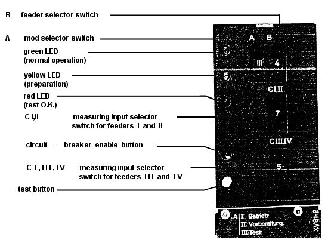
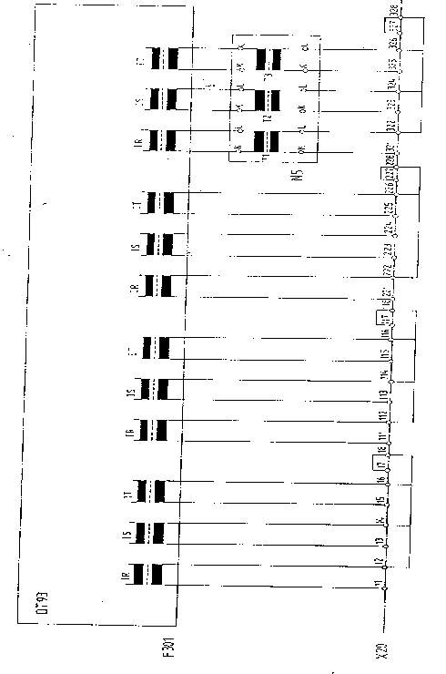

| Protection |
Differential Relay
DT93a
Issued to: Networks
Testing Procedure(s)
|
|
|
|||
| Equipment: Differential Relay DT93a |
Document No.: DfR-004-r0 | |||
|
Issued to: Networks |
||||
| Status: APPROVED | ||||
| Procedure: Testing Procedure(s) |
Approved Date: 06 Nov 2000 | |||
| Date to be Reviewed: Nov 2005 | ||||
Introduction
The three phase differential Relay type DT 93 is primarily intended to protect the following system components:
- Multi-winding transformers.
- Generators/ Transformers sets.
- Auto transformer.
- Reactor.The Relay consists of two Types of units:
- Feeder unit Iw93 for IA or 5A rated current one per feed
- Central measuring unit DI 93The Relay is connected directly to main current Transformer of each feeder of the protected item. Interposing C.TS are not necessary. The Ratio and phase compensation is made for each feeder on the relevant feeder unit.
The Relay is inrush stabilized and detects all type of short-Circuits in the item protected.
Safety Precautions
A work permit must be issued and the qualified maintenance staff should carry the suitable safety category,
Safety fence with caution marks surrounding the work area is required
The equipment isolation is required
Make sure that CT secondary are shorted before isolate the current circuit for test current injection
Switch off DC power supply before inserting or withdrawing any card from the relay module.
Tools and Equipment
Work to be Carried Out
Steps to Prepare for Relay Testing
Obtain outage for transformer protected by this relay.
Obtain copy of Relay setting from field maintenance file
Check that the two bus disconnecting switches are opened and tagged from all sides H.V, MV and LV sides.
Inspect the CT secondary circuits and all cabling supplying the relay including matching CT
Use the station drawings to isolate the following:
Breakers trip coils.
Breaker failure scheme associated with the Relay.
Disturbance alarms and fault recorder associated with the Re.
Preparation
This procedure is used to perform offload relay testing.
Look at the EEA Panel nameplate and check that this EEA system designation agrees with the power Transformer that has been taken out of service for maintenance
Check there is no AC current from CT's by using a clip on ammeter.
Test Procedures
Relay Current Testing
In testing unit xv92-1 change switch “A” from position (I) To position (II) to interrupting trip circuit this cause the green led C normal operation To Extinguish and yellow led (preparation) To light up see fig (1)
connect the secondary injection test set to the Relay as shown in fig (2) Terminal x20 (11-1`2) for testing phase (R) of feeder unit Iw93 for feeder No (1)
Slowly increase the current to the sitting value in the feeder unit Iw93 and pickup where:
x = 3 for vector groups o,6
=1.5 for vector groups 1.5,7.11
g = thumbwheel switch for basic setting In central measuring unit DI 93
a = thumb wheel switch for Ratio compensation
ma = Rang Multiplier 0.5 or 2
The Relay will operate and Red led in central measuring unit DI93 must be light up.
Record this value of operation in Test sheet.
Decrease the current to zero Ampere.
Press To the reset button in unit DI 93 To make reset for the relay.
Repeat steps from 3-2 To 3-7 after change testing terminals to x20 ( 13,14) and x20 (15.16) for task phase (s) and (T) respectively as shown in fig (2)
For testing the feeder unit (Iw93) for other feeders. Repeat the above steps
In testing unit xv9.1 change switch (A) from position (II) to position (I) normal condition.
Return Relay and Associated Equipment to Service
Return relay to service by removing the test leads from the Relay terminals and the test set.
Make sure that the CT secondary circuits are in normal condition.
If any equipment associated with the relay has been isolated it should be returned to service by the following restoration steps.
Breakers trip coils.
Breaker failure scheme associated with the Relay
Disturbance alarms and fault recorder associated with the Relay.
Request Power Transformer to be returned in Service
Take crossed readings of All current sand voltages from all sides (HV, MV, and LV) sides and compare them to these for normal load condition.
Check that these readings with station meters (MW, MVAR, KV, and KA)
Place a copy of the test Result in the field maintenance pile.
Test Sheet
Station: ……………………………….
Transformer: ……………………………….
Groups connection of transformer: ……………………………….
Relay Type: ……………………………….
|
|
CT's |
I pick up =
|
Measuring Values R S T |
||
|
IW 93-1 |
|||||
|
IW93-2 |
|||||
|
IW93-3 |
|||||
|
IW93-4 |
|||||

Figure ( 1 ): Front view of the testing unit XV91-2 showing the controls

Figure ( 2 )